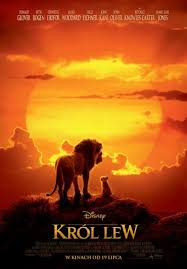
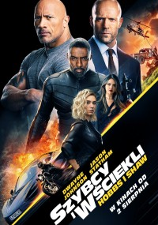
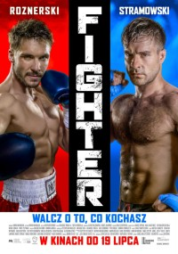

Król Lew (2019)
W wyniku podstępu Skazy, prawowity władca afrykańskiej sawanny Simba zostaje wygnany. Razem z dwójką swoich przyjaciół zamierza odzyskać tron. Król Lew (ang. The Lion King) – amerykański film przygodowy produkcji Walt Disney Pictures w reżyserii Jona Favreau. Jest to remake filmu animowanego o tym samym tytule z 1994 roku, który zrealizowany jest tą samą techniką, co Księga dżungli z 2016 roku, przy której pracował również Favreau. Za scenariusz do filmu odpowiedzialny jest Jeff...
Szybcy i wściekli (2019)
Stróż prawa Luke Hobbs i wyrzutek Deckard Shaw łączą swoje siły przeciwko cybernetycznie zmodyfikowanemu przestępcy zagrażającemu całej ludzkości. Od kiedy żyjący w zgodzie z prawem Hobbs (Johnson), lojalny agent Ochrony Służb Dyplomatycznych, oraz były pracownik elitarnych jednostek wojskowych Wielkiej Brytanii, dziś społeczny wyrzutek, Shaw (Statham), spotkali się w 2015 roku („Szybcy i wściekli 7”), pozostają w nieustannej walce – na słowa i czyny (choć pewnie lepiej byłoby napisać: ciosy)...
Fighter (2019)
Zawodnik MMA w wyniku kilku złych decyzji traci wszystko. W konsekwencji przymuszony przez gangstera musi wrócić na ring, by zmierzyć się z bokserem. Życzliwi recenzenci przekonują, iż trzeba "Fighterowi" dać fory ze względu na trudne okoliczności, w jakich powstawał. Przypomnijmy: w ubiegłym roku w trakcie zdjęć z realizacji filmu (znanego wówczas jako "Klatka") wycofała się część producentów oraz odtwórca jednej z głównych ról. Prace na planie zostały przerwane i przez moment wydawało się, że przedsięwzięcia reanimować się już nie da...